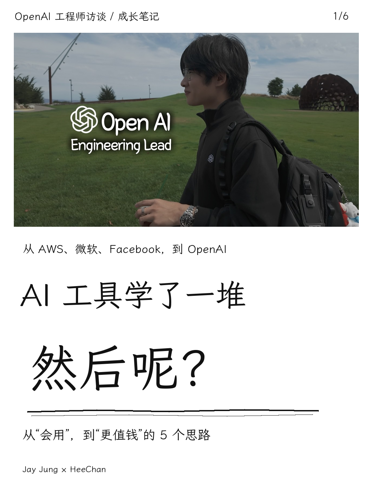
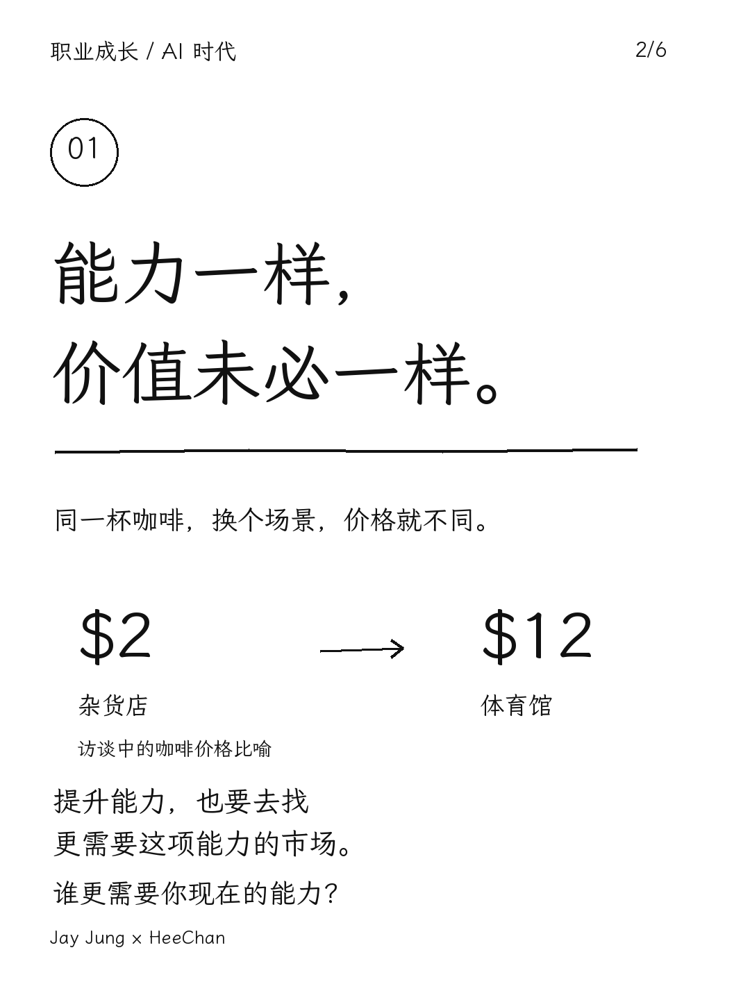
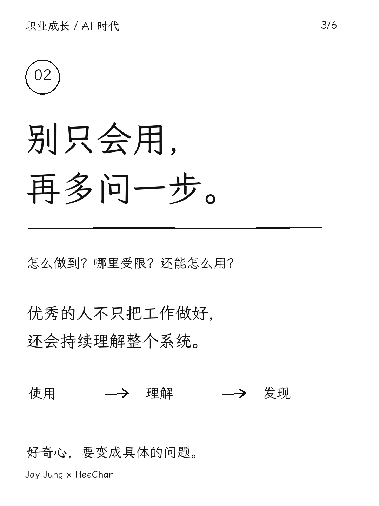
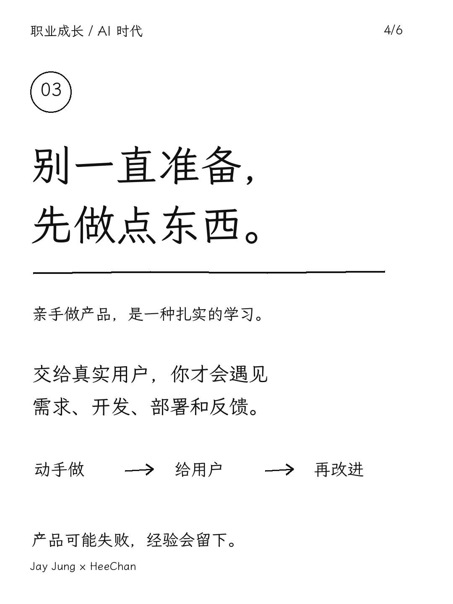
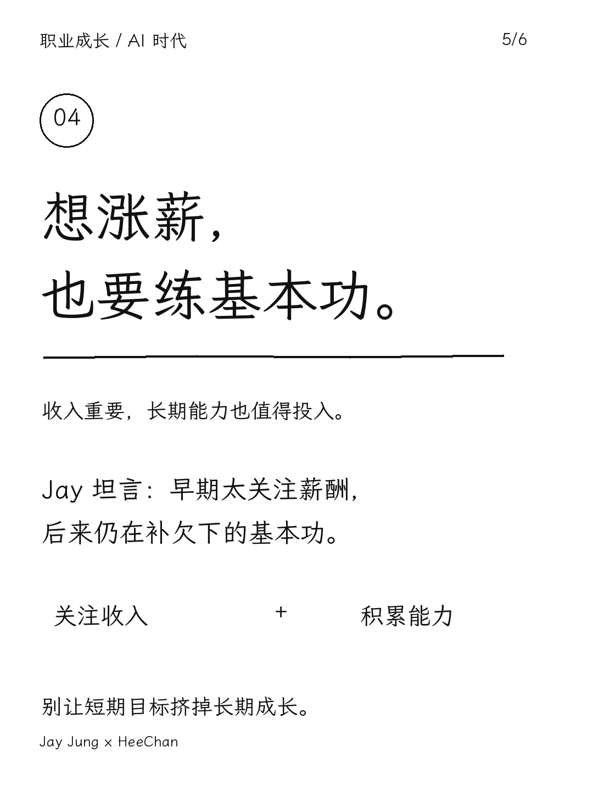
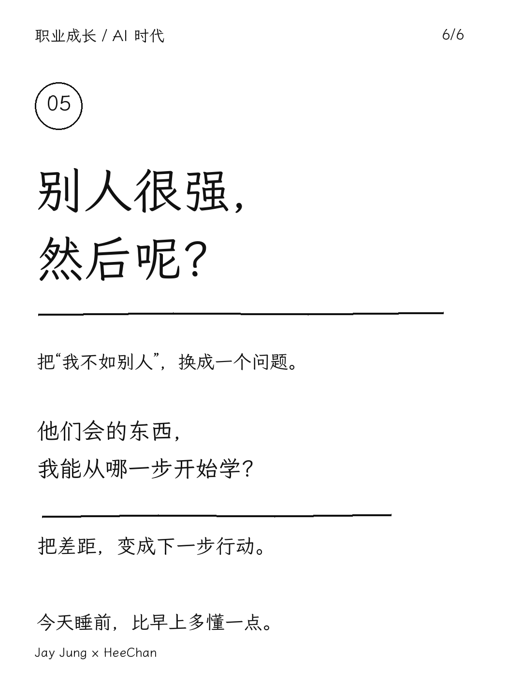

XIAOHONGSHU NOTE SKILL
把好内容，做成一套好笔记。
白底黑字、成熟钢笔字感、真实素材封面。用固定版式，把访谈、博客和学习材料整理成一张封面与五张观点卡片。
1080 × 1440六图成套霞鹜文楷本地确定性排版
渲染无需模型 API。内容提炼由你使用的 agent / 模型完成。

REAL EXAMPLE / 01
OpenAI工程师：拉开差距的5件事











复用风格，换成你的内容。
脚本独立可用，也可作为 Codex 技能安装01 / 准备素材
提供文稿和有权使用的原封面。让 agent 提取五个观点，生成输入 JSON。
02 / 本地排版
Pillow 使用包内字体绘制真实文字，生成六张 PNG、整组预览、图片 ZIP 与发布文案。
03 / 审核交付
检查文字与来源。需要上传时再调用浏览器工具，默认停在草稿审核页。
python -m pip install -r requirements.txt python skills/artifact-template-xiaohongshu/scripts/render_cards.py --spec skills/artifact-template-xiaohongshu/references/example-content.json --out output/demo